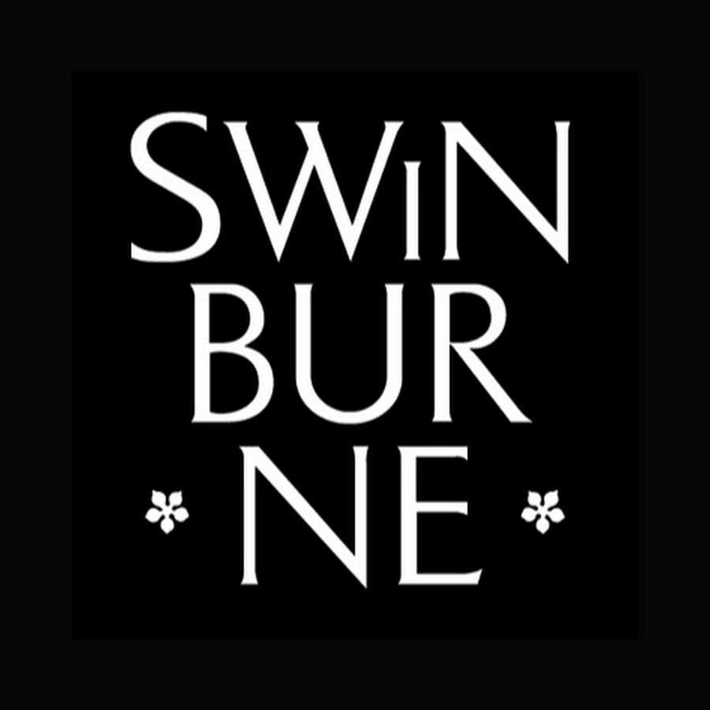

Tousif Alam
Melbourne,Australia · +61 414 070 942 ·
tousif.tr@gmail.com
Ambitious and client focused Data Analytics graduate, with a strong interest in the optimal use of data to guide intelligent business decision making. Relishes a challenge and appreciates the importance of collaborative teamwork and working with critical stakeholders to develop solutions to business problems. An enduring scholar, on a continuous quest to gain knowledge and implement these skills in the workplace.
GET IN TOUCH WITH ME
Experience
Data Analyst Intern
Swoop Analytics
March 2021 - June 2021

A Facilitated data analysis of over 80,000 tweets on Twitter using advanced computer models.
Performed initial analysis including cleaning and sorting the data, removing corrupted data, and assessing for data accuracy
Spearheaded the use of this data to produce high quality sentiment reports for use by the University
Collaborated effectively with key stakeholders across the University
Produced visual reports from the data research process, demonstrating excellent communication skills, and utilising a logical approach, using Tableau.
Data Analyst
Swinburne University of Technology
August 2021 - November 2021
Customer Service Supervisor
Woolworths Supermarkets
March 2021 - June 2021
Undergraduate Research Assistant
North South University
January 2015 - August 2015